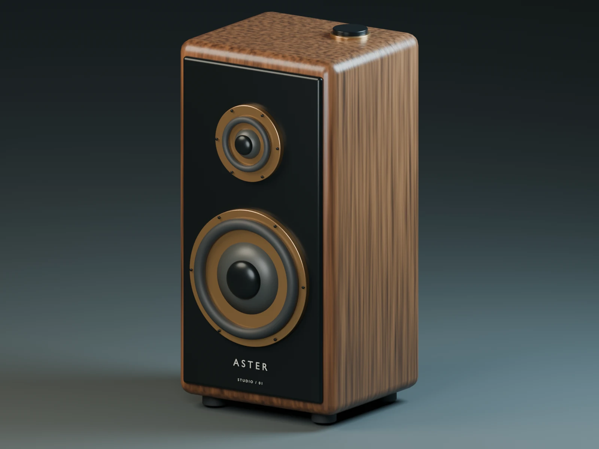

Maya animation and assets
Character animation with a supplied rig, rigging support, UV and material work, or preparation for Unity. The brief defines the target app and export requirements.
Inspect relevant work ↗I’m Happy Singh, a 3D artist and AI geek. I start with AI to explore, build and iterate, then refine the details manually. My work spans animation, real-time assets, games, websites and tools for artists.

New Blender concepts appear first.
Older recordings remain in the full collection.
Open a project to inspect its workflow or watch the original recording.
Send the brief and reference files.
We agree the output and revisions before starting.
Character animation with a supplied rig, rigging support, UV and material work, or preparation for Unity. The brief defines the target app and export requirements.
Inspect relevant work ↗Fix a small, agreed set of layout or navigation issues on an existing page. Delivery includes a patch, desktop and mobile checks, and deployment notes.
Discuss a page ↗Clean consistent formatting, separate exact duplicates and flag conflicting records for review. A small sample establishes the rules before processing a full file.
See a demonstration ↗AI-assisted development, iteration
and manual testing are part of the process.
Browser games and Unity projects are part of my independent work. The public itch.io collection is separate from development builds that are still being tested.
Public games on itch.io ↗Modeling, UV and asset-preparation tools are available through my Gumroad store. Each listing carries its own supported versions, files and license details.
Browse artist tools ↗Animation is my foundation, alongside graphic design and video editing. Explore the original collections for a wider view of my work.
Design collection ↗I’m Harpreet Singh Uppal, based in Mohali, India. My background includes Maya animation and rigging, AR/VR/MR assets, Unity integration, graphic design and video editing.
My thinking has changed as AI has become part of daily production. I use it to explore directions, build tools and move through early iterations faster. I then work manually on the details and check the result against the brief.
For a project, I want the role, source files and delivery requirements to be clear. The portfolio distinguishes original concepts, recordings and public products.
Read the updated résumé ↗Include the goal, references, required files and timeline. This opens your email app; no form submission or automatic quote is created.
You can also contact me on Fiverr ↗. Keep platform projects and payments on the platform.